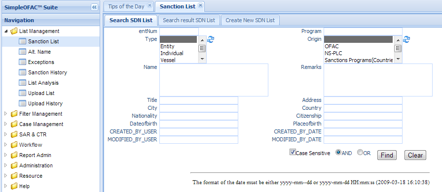
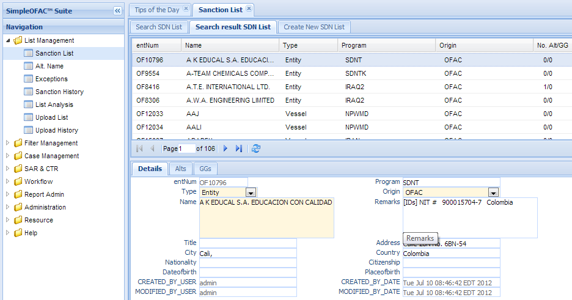
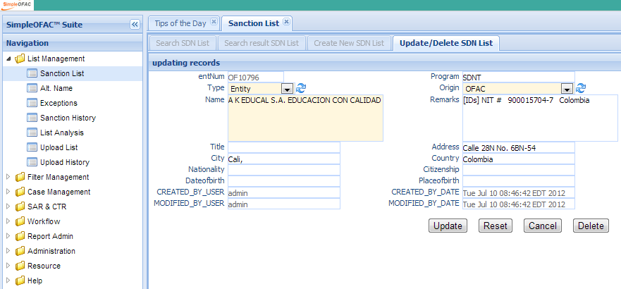
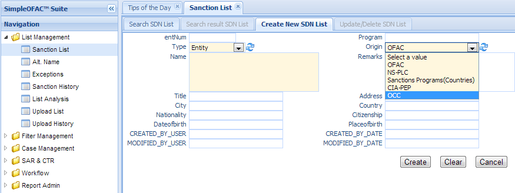

Sanction List Entry¶
Sanction list manages the main entry of the sanction entity list. Click the Sanction List in the left navigation menu under List management, a new Sanction list Tab folder will be created in the right panel. There are 3 sub-Tab folders, Search Sanction List, Search Result Sanction List and Create New Sanction List.
Each Sanction list entry has many fields, such as name, type, address, nationality, date of birth, remarks, etc. It can also have none to many alternative name (alias or aka) and none to many exceptions (good guy).
Search Sanction List¶
Search Criteria
| Field Name | Description |
|---|---|
| entNum | This is the unique number for the sanction list entry in the system. |
| Name | Name of this sanction list entry. |
| Type | Type of sanction list entry, It can be Entity, Individual, Vessel or Others. |
| Program | Sanction program name. |
| Title | Title of an individual. |
| Origin | The source of this sanction list entry, can be OFAC, OFSI, etc. |
| Remark | Remarks on this sanction list entry |
| Address | Stress address of this sanction list entry |
| City | City of this sanction list entry |
| Country | Country of this sanction list entry |
| Nationality | Nationality of this sanction list entry |
| Citizenship | Citizenship of Individual |
| DateOfBirth | Date of Birth of Individual |
| PlaceOfBirth | Place of Birth of Individual |
| AND | Select AND radio box if you want those criteria add together. |
| OR | Select OR radio box if you want to get the result if either criteria meet |
Functional buttons¶
- Find: – click Find button to search.
- Clear:– click Clear button to clear all the criteria.
Search Result Sanction List¶
The top part is the table, shows the list of the sanction list that meet the search criteria. The bottom part is the details, Alts (Alternative name, or Alias) and GGs (Good Guys, or Exception) of the selected entry. Each entry can have 0 to many Alts (Alias) and GGs. (see Alternative Name (Alt. Name or Alias) and Exception(Good Guy) for details on Alias Name and Exception)
Update/Delete Sanction List¶
Double Click the selected record in the table to modify this entry. A new Tab folder “Update/Delete Sanction list” will be added, as show below.
Functional buttons¶
- Update: – make changes on the sanction list, and save and switch back to “Search result sanction list” Tab. Some of the fields in this form are read only, like entNum, created/modified user and date.
- Reset:– reset the data to its initial value, discard all the changes.
- Cancel:– Cancel this change and switch back to “Search result sanction list” Tab.
- Delete:– Delete this entry; this will also delete the corresponding Alternative Name (Alt. Name or Alias) and Exception(Good Guy) if any. Then switch back to “Search result sanction list” Tab.
Create New Sanction List¶
Select the “Create New Sanction List” Tab to create a new entry.
| Field Name | Description |
|---|---|
| entNum | This is the unique number for the sanction list entry in the system. The value of entNum will be “LS” + sequence number. It is a read only field. LS stand for Local List |
| Name | Name of this sanction list entry, This is a mandatory field. |
| Type | Type of sanction list entry, It can be Entity, Individual, Vessel or Others; This is a mandatory field. |
| Program | Sanction program name. |
| Title | Title of an individual. |
| Origin | The source of this sanction list entry, can be OFAC, OFSI, etc. ; This is a mandatory field. |
| Remark | Remarks on this sanction list entry |
| Address | Stress address of this sanction list entry |
| City | City of this sanction list entry |
| Country | Country of this sanction list entry |
| Nationality | Nationality of this sanction list entry |
| Citizenship | Citizenship of Individual |
| DateOfBirth | Date of Birth of Individual |
| PlaceOfBirth | Place of Birth of Individual |
| CreatedByDate | Date and Time when this sanction list entry is created. It is a read only field. |
| CreatedByUser | User who create this this sanction list entry. It is a read only field. |
| ModifiedByDate | Last modified date and time; It is a read only field. |
| ModifiedByUser | Last modified user; It is a read only field. |
Functional buttons¶
- Create: – Click the Create button to create a new sanction list entry and switch to “Search result Sanction List” Tab. Name, Type and Origin are mandatory fields, if any of them is empty, an error message will show.
- Clear:– Click the Clear button to clear all the fields
- Cancel:– Click the Cancel button to cancel operation and switch back to “Search result sanction list” Tab.